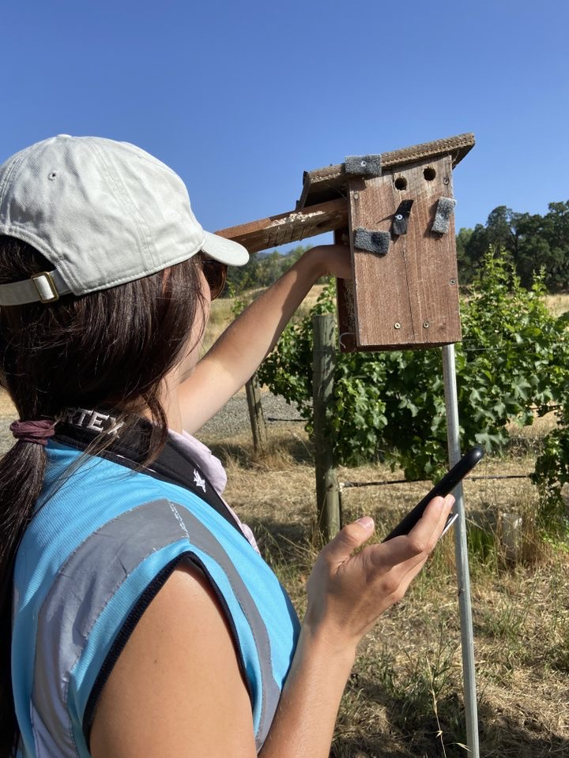

ABOUT
Background & research interests

I am a PhD student in Biology at Temple University in the Sewall Conservation Ecology Lab, studying how extreme climatic events influence populations, ecological communities, and species interactions. Before coming to Temple, I completed an M.S. in Natural Resources at Cal Poly Humboldt in the Johnson Habitat Ecology Lab, where my research examined how habitat management at local and landscape scales influences insectivorous bird and arthropod communities in California vineyards.
My research broadly asks why populations and ecological communities respond differently to environmental change. To address this, I investigate how habitat management, species traits, and environmental context interact to shape animal behavior, population dynamics, and community structure across human-modified landscapes and changing climates. Ultimately, this work aims to uncover the mechanisms underlying ecological vulnerability and resilience to inform conservation in dynamic landscapes.
Research Interests
- Population & Community Ecology
- Climatic Extremes & Disturbance Ecology
- Species Traits & Resilience / Vulnerability
- Behavioral & Trophic Mechanisms
- Phenotypic Plasticity
- Ecological Responses to Environmental Change
- Conservation in Human-Modified Landscapes
Quantitative & Field Skills
Quantitative Skills
- • Software & Tools: R, ArcGIS, SPSS, Microsoft Office, SAS, JMP
- • Generalized linear and mixed models
- • N-mixture and occupancy models
- • Bayesian hierarchical models (JAGS / R2jags)
- • Structural Equation Modeling (SEM)
- • Hidden Markov Models (HMM)
- • Habitat suitability modeling & Resource Selection Functions (RSFs)
- • Model selection & diagnostics (AICc, DHARMa, Gelman-Rubin, etc.)
Field & Lab Skills
- • BORIS animal behavior scoring
- • Avian point counts and distance sampling
- • Nest monitoring
- • PCR-based fecal DNA methods
- • Automated arthropod camera trap construction and deployment (Mothbox)
- • UV light and bucket trapping for nocturnal arthropods
- • Arthropod trapping and sampling (sticky traps and sweep netting)
- • Arthropod sorting and identification
- • Zooplankton identification
- • Chlorophyll a sampling and quantification via spectrophotometry
- • Vegetation surveys and quadrat sampling
Education
- PhD in Biology Temple University (In Progress) · Sewall Conservation Ecology Lab
- M.S. in Natural Resources Cal Poly Humboldt · Johnson Habitat Ecology Lab